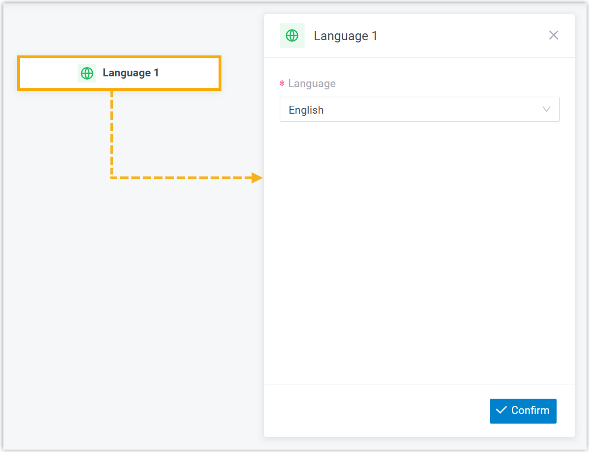
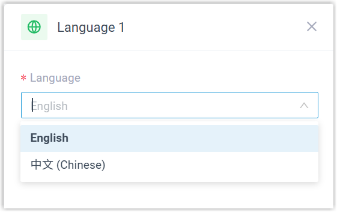
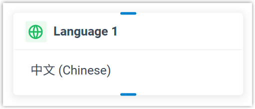

Language
This topic provides an overview of the Language component, and describes its configuration as well as supported component connections.
Component introduction
Language component allows you to change the system prompt language for subsequent components in a call flow.
- Supported languages
- By default, only English is available. To use another language, download the desired language in before configuring the component.
Component configuration
- After adding Language component to a call flow, click
Language component to proceed with the
configuration.

- In the Language drop-down list, select a
language.

- Click Confirm.
The selected language will appear on the component.

Component connections
Language component can be connected to one component, which can be any of the supported components.